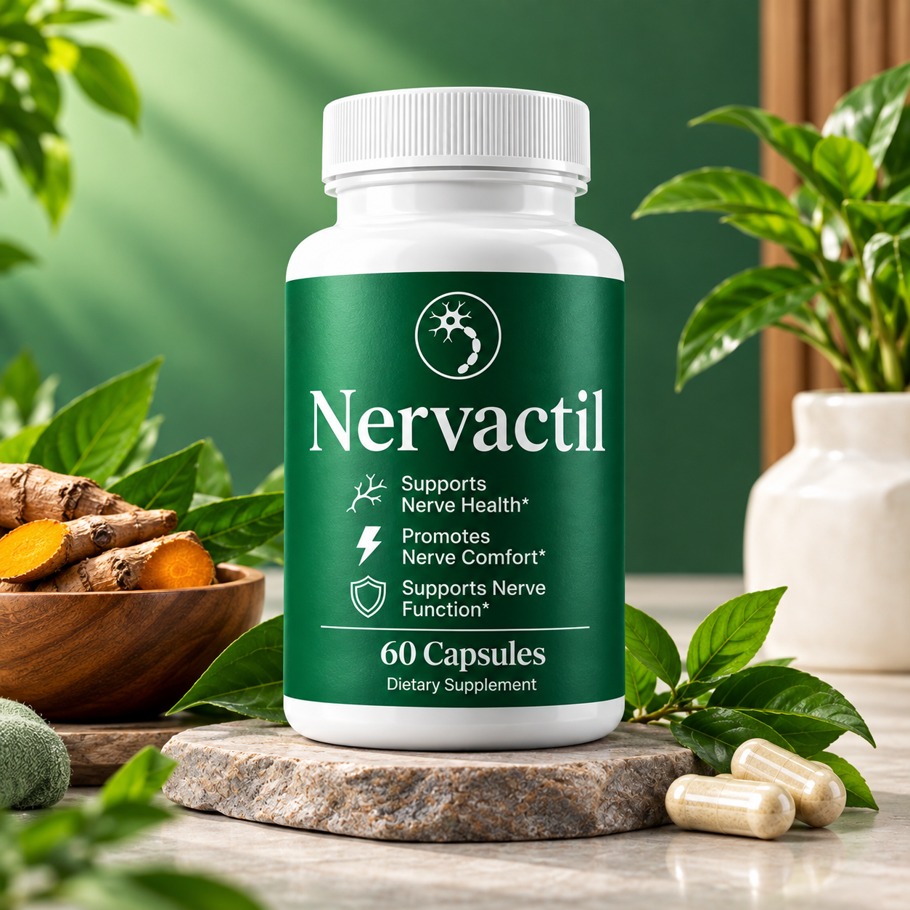

Consistency
If you choose to use a supplement, follow the current label rather than changing the serving based on anecdotal advice.
Learn how to approach supplement-use information responsibly without relying on an unverified dosage or unsupported medical claim.

The supplied product packaging positions Nervactil around nerve health, nerve comfort, and nerve function. This website treats those statements as product positioning rather than as a promise to diagnose, treat, cure, or prevent a medical condition.
The safest starting point is the current product label. Serving size, frequency, timing, storage, and other directions should come from the manufacturer or official seller. Do not substitute a generic supplement schedule for the product's actual instructions.
Follow the current serving instructions shown on the official Nervactil product label. This website does not invent a number of capsules, milligrams, timing, or frequency.
If you choose to use a supplement, follow the current label rather than changing the serving based on anecdotal advice.
Consider the product alongside balanced nutrition, sleep, activity, hydration, and other habits that support general wellbeing.
Review serving size, ingredients, warnings, storage instructions, and any other directions printed on the current package.
Anyone with questions about allergies, medications, pregnancy or nursing, an existing health condition, or supplement interactions should consider speaking with an appropriately qualified healthcare professional before use.
Use the current serving instructions provided on the official Nervactil product label. No dosage is fabricated on this website.
It is better to use current official instructions because serving information and formulations can change.
Check the official product source for the latest serving information and label details.